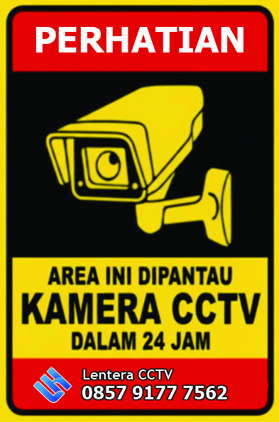

<!DOCTYPE html>
<html lang="en">
<head>
    <meta charset="UTF-8">
    <meta name="viewport" content="width=device-width, initial-scale=1.0">
    <title>CCTV Babat Lamongan</title>

    <!-- Leaflet CSS -->
    <link rel="stylesheet" href="https://unpkg.com/leaflet/dist/leaflet.css"/>

    <style>
        html, body {
            margin: 0;
            padding: 0;
            height: 100%;
        }

        #map {
            height: 100%;
            width: 100%;
        }
    </style>
</head>
<body>

<div id="map"></div>

<!-- Leaflet JS -->
<script src="https://unpkg.com/leaflet/dist/leaflet.js"></script>

<script>
window.onload = function () {

    // Map center
    var lamongan = [-7.118397609222043, 112.4150991611979];
    var map = L.map('map').setView(lamongan, 14);

    // Tile layer
    L.tileLayer('https://tile.openstreetmap.org/{z}/{x}/{y}.png', {
        maxZoom: 19,
        attribution: '© OpenStreetMap contributors'
    }).addTo(map);

    // Custom icon
    var customIcon = L.icon({
        iconUrl: 'marker-icon.png',  // replace with your icon
        iconSize: [32, 32],
        iconAnchor: [16, 32],
        popupAnchor: [0, -32]
    });

    // ----- Camera 1 -----
    var camera1 = L.marker([-7.118397609222043, 112.4150991611979], { icon: customIcon })
        .addTo(map)
        .bindPopup(<iframe width="560" height="315" src="https://www.youtube.com/embed/trnL2kr8P0M?si=g6xZ5tYcVnsa848a&amp;controls=0&amp;start=7" title="YouTube video player" frameborder="0" allow="accelerometer; autoplay; clipboard-write; encrypted-media; gyroscope; picture-in-picture; web-share" referrerpolicy="strict-origin-when-cross-origin" allowfullscreen></iframe>);

    // ----- Camera 2 -----
    var camera2 = L.marker([-7.116, 112.418], { icon: customIcon })
        .addTo(map)
        .bindPopup('Kamera 2</b><br>');

    // ----- Camera 3 -----
    var camera3 = L.marker([-7.120, 112.412], { icon: customIcon })
        .addTo(map)
        .bindPopup('Kamera 3</b><br>');

};
</script>

</body>
</html>
